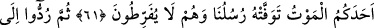

GAYBIN ANAHTARLARI
59. Gaybın anahtarları Allah’ın yanındadır; onları O’ndan başkası bilmez. O,
karada ve denizde ne varsa bilir; O’nun ilmi dışında bir yaprak bile düşmez. O
yerin karanlıkları içindeki tek bir taneyi dahi bilir. Yaş ve kuru ne varsa hepsi
apaçık bir kitaptadır.
60. Geceleyin sizi öldüren (öldürür gibi uyutan), gündüzün de ne işlediğinizi
bilen; sonra belirlenmiş ecel tamamlansın diye gündüzün sizi dirilten (uyandıran)
O’dur. Sonra dönüşünüz yine O’nadır. Sonunda O, yaptıklarınızı size haber
verecektir.
61. O, kullarının üstünde yegâne kudret ve tasarruf sahibidir. Size koruyucular
gönderir. Nihayet birinize ölüm geldi mi elçilerimiz (görevli melekler) onun canını
alırlar. Onlar vazifede kusur etmezler.
62. Sonra insanlar gerçek sahipleri olan Allah’a döndürülürler. Bilesiniz ki hüküm
yalnız O’nundur ve O hesap görenlerin en çabuğudur.
“Gaybın” gayb hazînelerinin “anahtarları, O’nun” özel olarak Allah Teâlâ’nın
“yanındadır.”
(
), (
) kelimesinin çoğulu olup mahzen ve hazine demektir. Bu makama daha
uygundur. Nitekim Şeyhülislâm Sa’dî Çelebi’nin Hâşiyesi’nde böyle yazmaktadır.
Bu kelimenin açma aleti demek olan anahtar mânâsında (
) kelimesinin çoğulu
olması da mümkündür. Buna göre manası, ‘kendisi ile gayba erilen şeyler’ demektir.
Burada gayb, anahtarlarla sıkı sıkı kilitlenen hazinelere benzetilmiş ve ona hayali
anahtarlar isnad edilmiştir. Bu anahtarlar kimin yanında ise gayb hazinelerine başkası